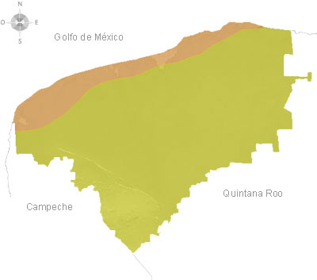
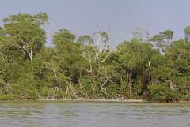

YUCATÁN
El 85.5% de la superficie del estado presenta climas cálido subhúmedo y el restante 14.5% presenta clima seco y semiseco, que se localiza en la parte norte del estado.
La temperatura media anual es de 26°C, la temperatura máxima promedio es alrededor de 36°C y se presenta en el mes de mayo, la temperatura mínima promedio es de 16°C y se presenta en el mes de enero.

La precipitación media estatal es de 1 100 mm anuales, las lluvias se presentan en verano en los meses de junio a octubre. El clima cálido húmedo permite el desarrollo del cultivo del henequén, el de mayor importancia en el estado, pero también se cultiva: maíz, frijol, melón, sandia, naranja limón y mango.
